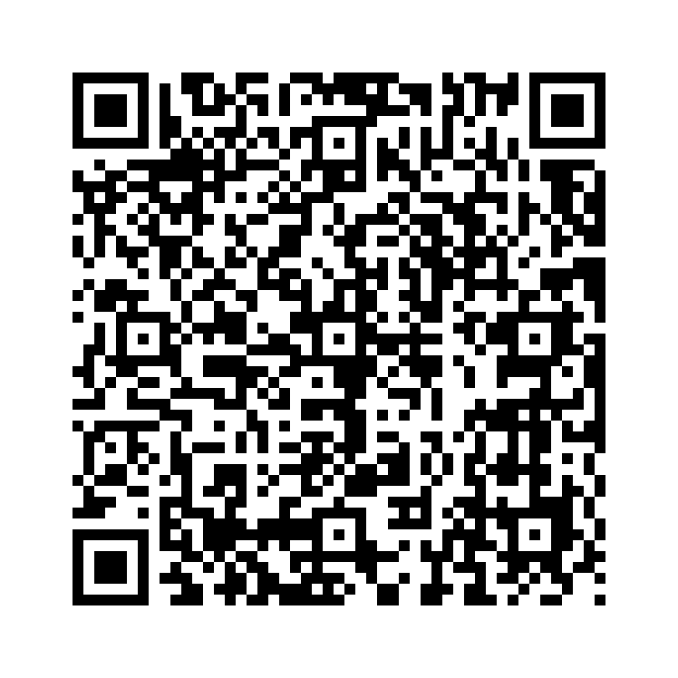

「It is + 形容詞 + that節」は、形式主語「It」を使い、実際の主語や内容がthat節として後ろに続く構文です。この構文は、意見や感情を表すときに便利です。
例:
形式主語構文で使用される用語:
以下の単語を並び替えて正しい文章を作りましょう。（和訳も参考にしてください）

問題1: (important / we / it / that / practice / is / every day) - 毎日練習することが重要です。
解答: It is important that we practice every day.
解説: 「It is + 形容詞 + that節」の構文を使い、「重要である」という意見を表しています。
問題2: (that / is / she / it / attends / necessary / the meeting/ ?) - 彼女が会議に出席する必要がありますか？
解答: Is it necessary that she attends the meeting?
解説: 疑問文の形式主語構文で、出席が「必要であるか」を尋ねる表現です。
問題3: (not / it / clear / is / understands / he / that / the instructions) - 彼が指示を理解しているかは明らかではありません。
解答: It is not clear that he understands the instructions.
解説: 否定文の形式主語構文を使い、「明らかではない」という状況を表しています。
問題4: (is / it / surprising / that / won / the game / they) - 彼らがその試合に勝ったのは驚きです。
解答: It is surprising that they won the game.
解説: 「It is + 形容詞 + that節」の構文で驚きを表現しています。
問題5: (that / it / possible / he / is / can / finish / the task) - 彼がその作業を終えられる可能性があります。
解答: It is possible that he can finish the task.
解説: 「It is + 形容詞 + that節」の構文で「可能性」を表しています。